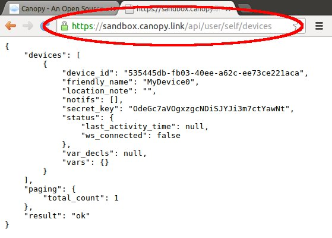

Now that we have created a device resource, let's switch gears and talk about Canopy's REST API.
All capabilities of the Canopy backend are accessible over the web using the Canopy REST API.
You can see the Canopy REST API in action using your web browser. For example,
this URL returns the list of devices you have access to as a JSON array:
https://sandbox.canopy/link/api/user/self/devices
If you are logged in, you will see something like:

In fact, all of the Canopy Client Libaries (such as the Canopy C Client and Canopy Javascript Client) are essentially just thin wrappers around the Canopy REST API.
Full documentation of the REST API can be found here: Canopy REST API Specification.
Currently Canopy supports REST API